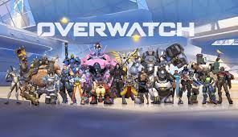

Overwatch (PS4)
Played by: Jaymian Bustos
Description
With all the love in the world for Team Fortress 2, you bet when my cousin introduced this game to me that I would be hooked instantly to the newest class-based shooter on the block. I've met and maintained so many relationships that extended outside the game that I honestly wouldn't know who I'd be without ever playing the game. Even though I and many of the friends I've made through the game are not as infatuated with the game as we once were, we still reminisce about those days where we would all come together and compete and goof off, helping each other improve our game play and following the game up to Overwatch 2.
Dragon Ball Fighterz

Played by: Jaymian Bustos
Description:
Playing the game purely out of love for the franchise, I was not expecting myself to get into the game as much as I did simply because I never played fighting games seriously until this one. This was the very first time I dipped my feet into the Fighting Game Community (FGC) spawning a love for title such as Guilty Gear, Street Fighter, Dragon Ball Fighterz, and much more. The energy and storylines created within this game alone with the popularity of Dragon Ball itself created an oasis of competitors from a variety of different game genres to compete at a high level. Fighting games were you couldn't blame anyone else but yourself for your failures, kept you on your toes, testing your reactions, knowledge, and execution. The pay off? Seeing yourself improve through the time and dedication you put in. You weren't leveling up a character and their skill, you were leveling up yourself and your skills as a player. As this game's community is slowly withering away, I can thank it for introducing me to a genre that I would never have even considered touching if it werent for this game.
Apex Legends (PS4)
When Overwatch 1 was at on its ends as more developement went towards it's sequel, Apex Legends was here to fill the class-based games Overwatch had left me craving. Quick games with down time in between to mess around with a couple friends.